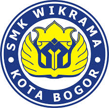

SMK Wikrama Bogor

Present
GO GREEN!
Creativ and Inovative

Informasi Call Center :
SMK Wikrama Bogor
Telp. 0251-8242411
email: prohumasi@smkwikrama.net
SMK Wikrama 1 Jepara
Telp. 0291-578191
email: smkwikrama1jepara@gmail.com
SMK Wikrama 1 Garut
Telp. 0262-2247029
email: smkwikrama1garut@gmail.com
SMK Wikrama 1 Kab. Semarang
Telp. 081904922979
email: smkwikrama1kab.semarang@gmail.com
SMK Wikrama 1 Bekasi
Telp. 021-4000 2769
email: smkwikrama1bekasi@gmail.com
Telp. 0251-8242411
email: prohumasi@smkwikrama.net
SMK Wikrama 1 Jepara
Telp. 0291-578191
email: smkwikrama1jepara@gmail.com
SMK Wikrama 1 Garut
Telp. 0262-2247029
email: smkwikrama1garut@gmail.com
SMK Wikrama 1 Kab. Semarang
Telp. 081904922979
email: smkwikrama1kab.semarang@gmail.com
SMK Wikrama 1 Bekasi
Telp. 021-4000 2769
email: smkwikrama1bekasi@gmail.com

REDUSE
Reduse Adalah Pengertian Dari (Mengurangi), Yaitu Menggurangi Segala Sesuatu Yang Menyebabkan Timbulmya Sampah.Read More >>
REUSE
Reuse Adalah Pengertian Dari (Guna Ulang), Yaitu Kegiatan Penggunaan Kembali Sampah Yang Masih Digunakan Baik Untuk Fungsi Yang Sama Mapun Fungsi Yang Lain.Read More >>
RECYCLE
Recycle Adalah Pengertian Dari (Mendaur Ulang), yaitu Mengolah Sampah Bekas Menjadi Bahan Baru Yang Ingin Digunakan.Read More >>